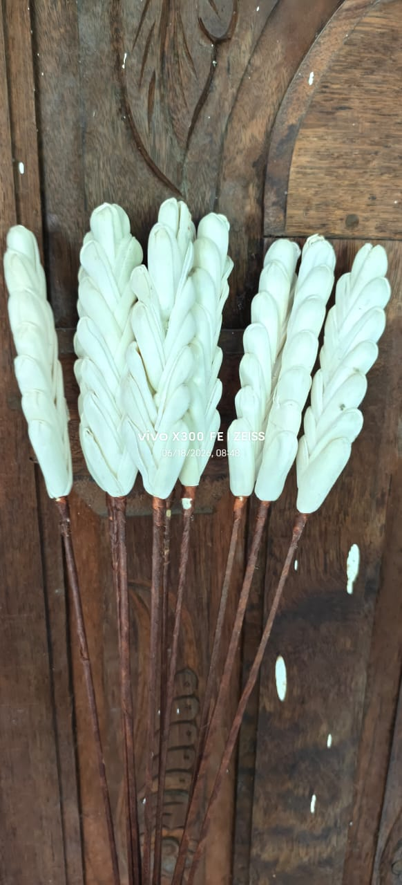
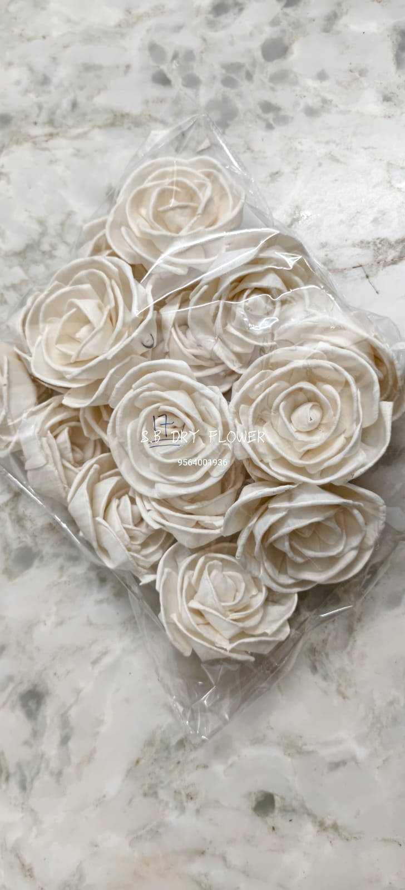

Crafting Natural Beauty Since 2016

SB SHOLA WOOD FLOWERS (S.B. DRY FLOWER) was founded in 2016 under the proprietorship of Shiladitya Baidya in Mandir Bazar, South 24 Parganas, West Bengal. Born out of a deep respect for Bengal's centuries-old tradition of sholapith craftsmanship, the business was established to bring high-quality, handcrafted shola floral products directly to decorators, businesses, and flower lovers across India.
Over the years, we have focused on refining the processing of natural shola pith—from raw reed harvesting to precision blade slicing and artisan petal shaping. What began as a local workshop has developed into a dependable manufacturing and supply setup capable of handling large-scale wholesale orders, regular retail supply, and bespoke floral assortments.
Today, our products travel from our workshop in West Bengal to clients across multiple Indian states, serving wedding decorators, florists, craft studios, and interior designers who value genuine organic materials and enduring craftsmanship.
Shola is a natural aquatic plant that grows wild in marshlands. The inner core (pith) of the stem is uniquely soft, spongy, milky white, and extremely lightweight. Slicing this pith requires immense tactile skill and traditional sharp knives called kath.
Our artisans shape each petal by hand—gently curling, fluting, layering, and securing them into lifelike roses, blooming lotuses, pine sticks, and decorative stems. Because no harsh chemicals or artificial plastics are needed, every flower retains its gentle botanical elegance and organic texture.
Every batch undergoes careful finishing, stem binding, and quality inspection before packing, ensuring our clients receive consistent, premium florals ready for display and commercial styling.
100% Organic Renewable Marshland Plant Material
Artisan Sliced & Sculpted Petal By Petal
Effortless to Handle, Ship & Incorporate into Décor
Authentic Floral Forms in Warm Natural Ivory Tones
The meticulous 3-step artisan manufacturing methodology practiced at SB Shola Wood Flowers.

We harvest and sort high-quality natural shola reeds. The outer bark is carefully peeled to expose the soft, clean, white inner pith cylinder, which is graded for purity and texture.

Artisans slice paper-thin sheets from the pith rolls and manually contour each petal. The petals are curled, folded, and shaped into botanical silhouettes like roses, pinecones, and lotuses.

Finished blossoms are mounted onto natural stems, tied into balanced bouquets, or bundled for bulk consignments with protective packaging designed for safe pan-India shipping.
How raw wetland reeds evolve through skilled hands into refined botanical collections.
Harvested renewable aquatic marsh reeds with soft internal pith.
Debarked, clean white cylinders sliced into thin sheets.
Curled and sculpted individually to mimic real floral anatomy.
Mounted with stems, natural dried twigs, and botanical accents.
Complete bouquets, stems, and boxed assortments for clients.
Exploring the unique characteristics that make shola dry flowers an exceptional medium for décor and styling.
Completely organic plant pith with a soft, wood-grain texture and subtle natural ivory sheen that harmonizes with any setting.
Remarkably feather-light yet sturdy when shaped, making shipping easy and allowing effortless mounting on delicate installations.
Easily combines with pampas grass, dried eucalyptus, wheat sticks, and ceramic vases for contemporary or classic interior looks.
When kept away from moisture and direct rain, shola flowers retain their appearance and charm over extended periods without wilting.
We supply our handcrafted botanical products to diverse businesses and creative professionals.
Supplying dried floral fillers, focal roses, and unique stems for boutique arrangements and dry bouquets.
Providing ready-to-display stems, vases, and botanical bundles for lifestyle retail and curated catalog collections.
Bulk floral sticks, lotus blooms, and decorative twigs for wedding stages, backdrop arches, and festival installations.
Handcrafted miniature flowers and assortments for hampers, candle accents, resin art, and bespoke gifting.
Packaged stems and table floral bunches ready for retail display in handicraft and lifestyle outlets.
Bulk volume manufacturing with direct workshop pricing and organized pan-India transportation.
Supplying consistent, quality-checked batches to regional distributors and online craft resellers.
Custom dried floral compositions for hotels, restaurants, corporate offices, and model apartments.
Whether you need regular wholesale supplies, custom floral assortments, or event quantities, our workshop is equipped to handle your requirements with care and punctuality.